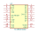
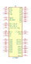

<table>
<tr>
<th>Symbol</th>
<th>Description</th>
</tr>
<tr>
<td><br>XC18V01SO20</td><td>Description: None<br>Keys: None<br>Datasheet: <a href="xilinx/xc18v00proms.pdf">xilinx/xc18v00proms.pdf</a></td>
</tr>
<tr>
<td><br>XCF08P</td><td>Description: Platform Flash In-System PROM<br>Keys: PROM FLASH<br>Datasheet: <a href="https://www.xilinx.com/support/documentation/data_sheets/ds123.pdf">https://www.xilinx.com/support/documentation/data_sheets/ds123.pdf</a></td>
</tr>
</table>
